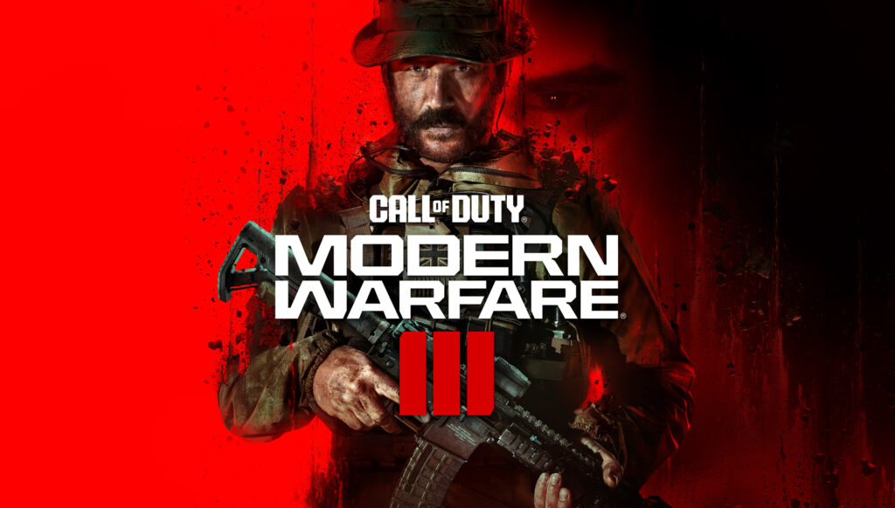
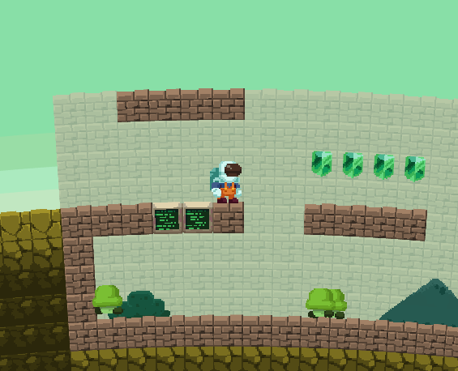
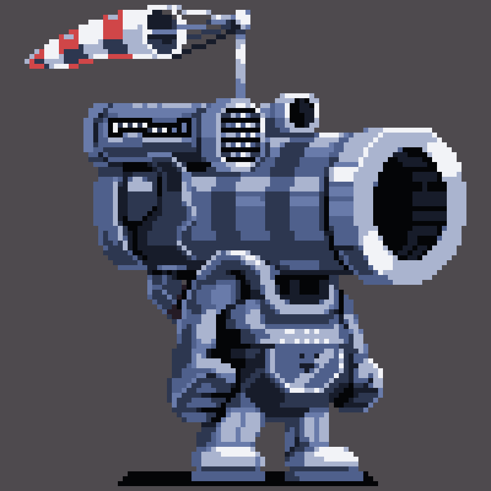
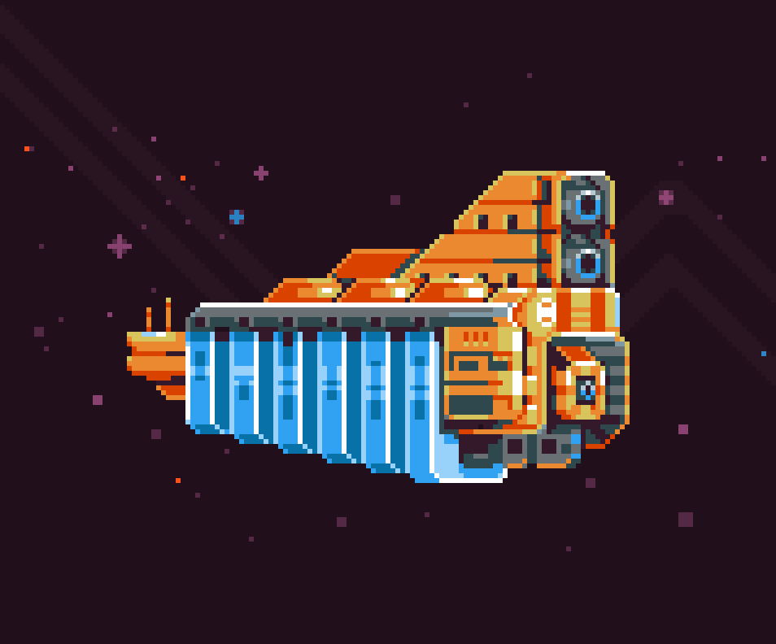

I’m a game developer and programmer.
I’ve worked on AAA, academic, and indie projects. Check out some of my work below or visit projects/.
Find me on Bluesky, Mastodon, LinkedIn, and GitHub.
Call of Duty
I am a lead engineer at Sledgehammer Games, where I build tech and work with a great team. I have shipped titles on PC, Xbox, and PlayStation. More details about my AAA work can be found on my LinkedIn.


MoonQuest
MoonQuest is a procedurally-generated adventure game with forests, mountains, and ruins. I built a custom engine in C++ and OpenGL featuring destructible terrain, random worlds, AI, and fluid simulation. Development was self-funded with support from Film Victoria and Kickstarter. Buy it on Steam.
“There’s an inviting strangeness to it…”
PC Gamer


Fugu
Fugu is a procedural modelling system for rapid exploration of 3D geometry. It was built using C++, Qt, and OpenGL, and supports interactive scripting via Lua. [Site, Technical Paper, Example Video]


No Mario’s Sky
No Mario’s Sky is a procedurally-generated game made in 72 hours. It was featured on several gaming sites and taken down by a Nintendo DMCA request. Play the modified version DMCA’s Sky.
Mario meets No Man’s Sky in this fiendishly fun fan-made game.


Generative Modelling
I hold a PhD in Computer Science from Monash University, where I developed a novel method for generating complex organic 3D meshes and received the Mollie Holman medal for my dissertation. Read more about this system, or visit papers/.


Pixel Dailies
I started Pixel Dailies, a popular online pixel art community. My art has been featured in Edge Magazine’s “The Art of The Pixel”. My Pixel Art Pixel Dailies on Bluesky Pixel Dailies on X

